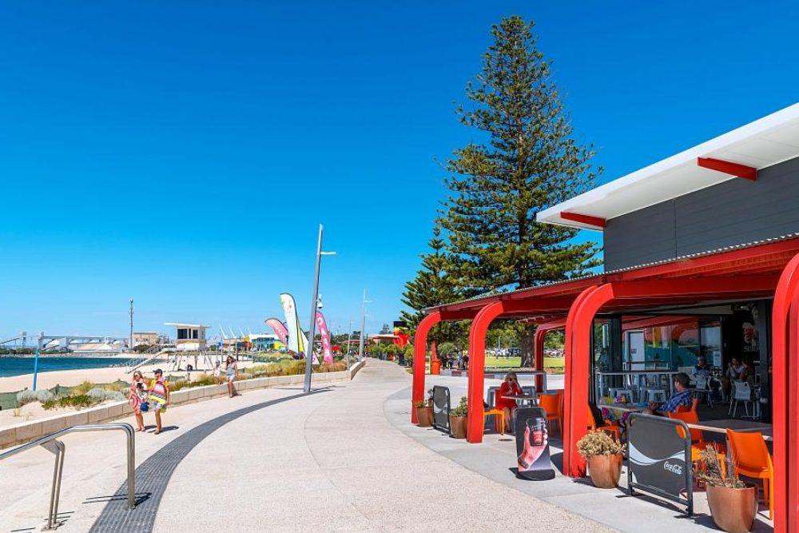
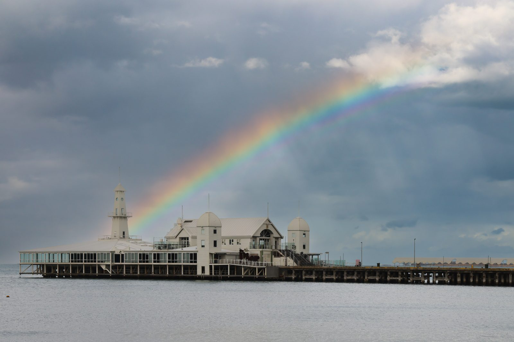
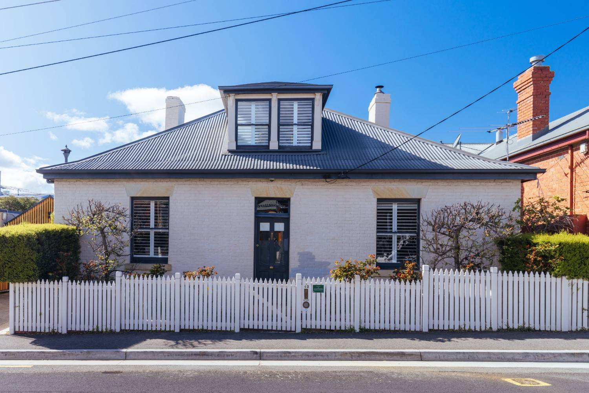
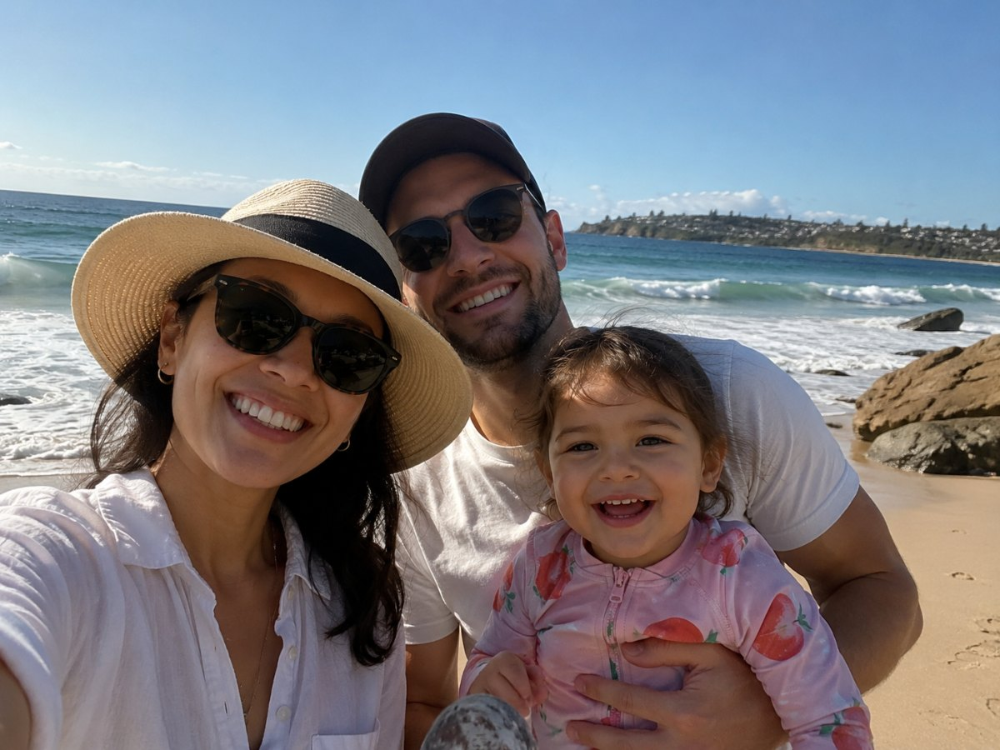
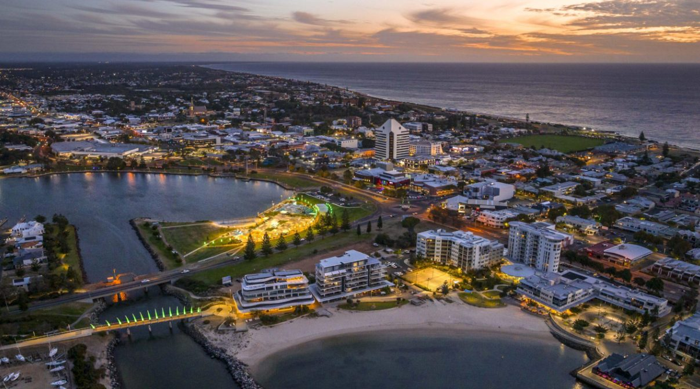

What is life really like
in regional Australia?
Most people arrive picturing Sydney Harbour or Melbourne’s cafés. Many end up somewhere completely different, and wouldn’t change it.
Regional Australia is not remote Australia
Regional does not mean the outback, and it rarely means giving things up. In many cases it means a modern city with a major hospital, good schools and a beach — one that simply is not Sydney, Melbourne or Brisbane.
Many regional cities are home to well over 50,000 people. Some pass 100,000, or even 250,000. For many internationally trained clinicians, they feel like medium-sized cities rather than isolated towns. They have:
- Major public hospitals
- Private healthcare providers
- Universities
- Airports
- Modern shopping centres
- Sporting facilities
- Restaurants and cafés
- Coastline or countryside on the doorstep



Your commute changes dramatically
In many regional cities, a commute of 10–20 minutes is completely normal. Instead of spending two hours a day in traffic, you could be:
- Walking the dog before work
- Having breakfast with your children
- Going for a swim after your shift
- Home for dinner every evening
Over a year, that adds up to hundreds of hours outside work. For many families, it becomes the single biggest change after relocating, bigger than the job, bigger than the weather.
Healthcare sits at the heart of the community
Working regionally often feels different professionally, too. Many clinicians tell us they feel they make a more visible difference.
You’re known
Healthcare professionals often become well-known within their local communities. Your work is visible, and so are you, in a way that’s easy to lose in a city of five million.
Closer colleagues
You work closely with colleagues across specialties and often know your referring clinicians personally, rather than as a name on a request form.
Longer relationships
Patients tend to stay with the same services for longer, so stronger professional relationships have room to develop.
The pace is different. You don’t give things up.
Life moves a little more slowly. That doesn’t mean nothing happens, children still have football training, hospitals are still busy. But everyday life feels less rushed.
Parking isn’t an event. Shopping takes twenty minutes rather than an afternoon. Many people leave work and are at the beach, the river or a walking trail within half an hour. For people relocating from London, Johannesburg or Dubai, the change can feel remarkable.
And the biggest misconception is that regional means missing out. Many regional centres have:
- Excellent coffee culture
- Independent restaurants
- Farmers’ markets
- Live music
- Sporting clubs and gyms
- Cinemas
The difference is that everything is closer together.

Housing can be very different
Property prices vary considerably across Australia, but many regional locations offer homes that would cost significantly more in the largest cities. That might mean:
- A larger garden
- An extra bedroom
- Space for children to play
- A home office
- A shorter drive to work
For families, this is often the biggest practical advantage of regional living. Our relocation cost guide shows how housing decisions shape your first three months, wherever you land.
Weekends become simpler
Instead of recovering from a week of commuting, weekends get their shape back. A typical Saturday might be:
- Breakfast at a local café
- Children’s sport
- A trip to the beach
- Lunch with friends
- An afternoon barbecue
- Sunset by the water
Not because you’re on holiday. Because that’s where you live.
What about schools?
Australia has excellent schools across metropolitan and regional areas, government, Catholic and independent. Regional communities are no exception.
Class sizes can sometimes be smaller, children often spend less time travelling to and from school, and parents frequently comment on the strong sense of community around local schools.
One thing to check early: if you’re relocating on a temporary visa, public school fees for temporary residents vary between states, and in some states, regional moves are treated differently from metropolitan ones. Our school fees guide covers it state by state, and the education guide explains how Australian schooling works.
Will I earn less?
Not necessarily. Regional doesn’t mean lower paid, particularly in professions experiencing workforce shortages.
Some regional positions offer stronger overall packages than their metropolitan equivalents, which can include:
- Relocation assistance
- Housing support
- Visa sponsorship
- Professional development funding
- Recruitment incentives
The honest advice: compare the whole package, and the whole cost of living, rather than assuming anything from the postcode. Our salary guide explains how Australian pay is structured, and the negotiation guide covers what’s movable in an offer.
Is there anything you’ll miss? Probably.
Regional Australia isn’t the right choice for everyone, and we’d rather you knew that now than after you’ve signed a tenancy.
If you love living in the centre of a major international city, hundreds of restaurants, extensive nightlife, big sporting events every week. Regional living will feel quieter than you’re used to. Some specialist shopping or entertainment may mean travelling to a larger city. And depending on where you live, visiting family overseas may involve a domestic flight before your international one.
These aren’t reasons not to move. They’re part of making an informed decision.
From our experience, the people who settle best are those who value more time outside work, space for their family, outdoor living, community and strong professional relationships. Many arrive planning to stay for two years. A surprising number are still there ten years later.
Don’t judge a role by its postcode
The biggest mistake we see international candidates make is dismissing a role because they’ve never heard of the town. Before saying no, ask:
- How far is it from the beach?
- What is the hospital like?
- How long is the commute?
- What are the schools like?
- Could my family have a better quality of life there?
Sometimes the places you’ve never heard of become the places you never want to leave.

The best move isn’t always the biggest city
We’ve helped healthcare professionals settle across Australia, coastal cities, regional hubs, places many people outside Australia have never heard of. Time and again, we hear the same thing:
“We only wish we’d realised what regional Australia was actually like sooner.”
Sometimes the right move is the place that gives you more time, more space and a better life outside work.
Tell us what matters to your family
The beach, the schools, the commute, the mortgage, everyone weighs them differently. Tell us what matters most, and we’ll tell you honestly which places fit, including the ones you haven’t heard of yet.
Ethicare Resourcing · your guide to a life and career in Australia.